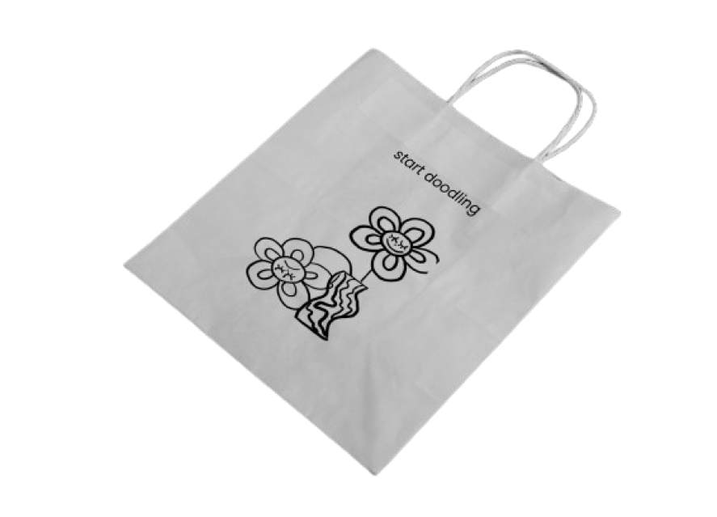

D
O
O
D
L
E
S
Styl graficzny "doodle" to nieformalny, luźny sposób rysowania, charakteryzujący się prostotą, spontanicznością i często chaotycznym wyglądem. Doodle to zazwyczaj szybkie szkice, kreślenie przypadkowych kształtów, wzorów i linii bez konkretnego planu. Ten styl jest często stosowany w notatkach, na marginesach zeszytów czy w czasie rozmów telefonicznych.
Szybkość i spontaniczność: Doodling zazwyczaj odbywa się szybko i spontanicznie, bez zbytniego zastanawiania się nad detalami.
Prostota: Doodle skupia się na prostych kształtach i linach. Celem jest przekazanie pomysłów za pomocą minimalnych elementów graficznych.
Pętelki, kształty i wzory: Doodle często obejmuje pętelki, abstrakcyjne kształty, wzory i linie, które nie zawsze muszą mieć konkretny sens.
Styl doodle jest jednocześnie zabawny i kreatywny, pozwalając na wyrażenie pomysłów w niekonwencjonalny sposób. Doodling może również pomagać w koncentracji podczas spotkań czy zajęć, a niektórzy ludzie twierdzą, że rysowanie w trakcie nauki pomaga im lepiej przyswajać informacje.
